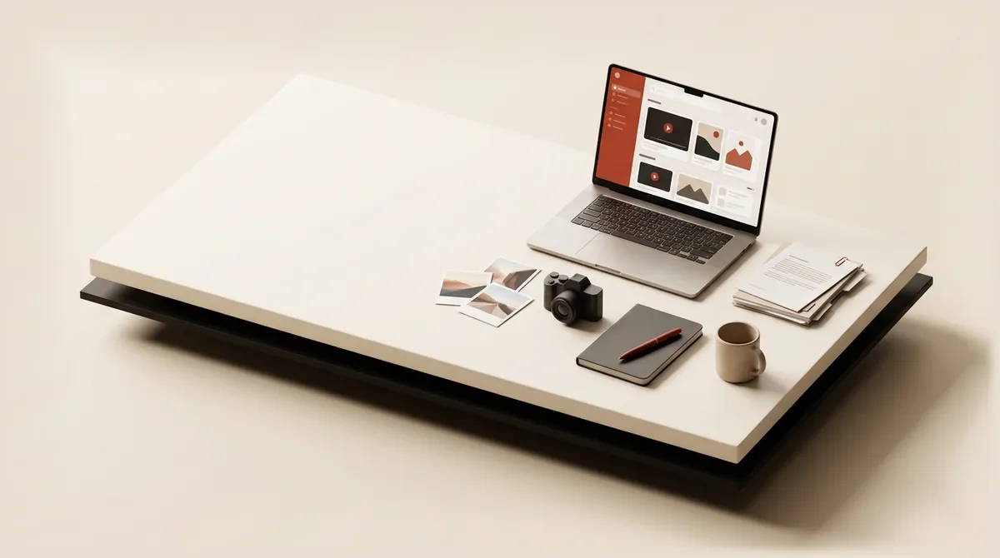
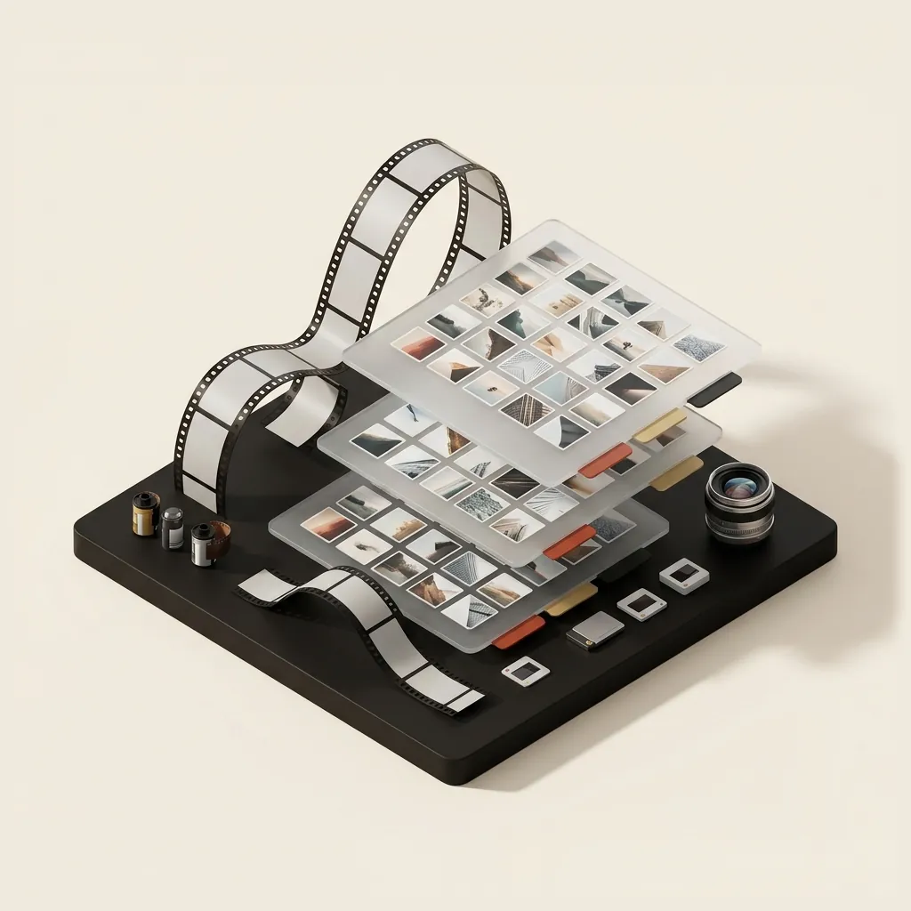
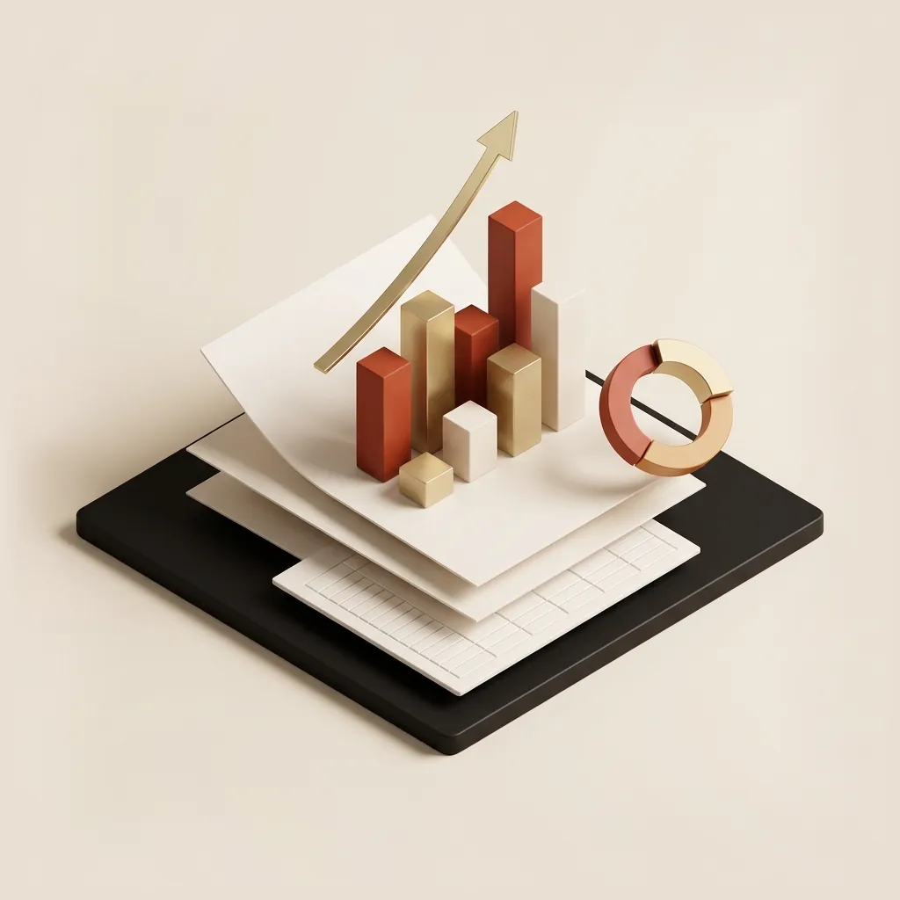

مساحة عمل فرق الإعلام
غرفة أخبار مؤسستك
مكان واحد لأنشطة مؤسستك وصورها وموافقات من ظهروا فيها. كل قصة تُراجَع قبل استخدامها، وكل تقرير يُبنى من مواد معتمدة.

01 — الأنشطة والصور
كل نشاط مع صوره
يُسجَّل النشاط مرة واحدة وتُضاف صوره، ثم يُعثر عليها بحسب المشروع أو النشاط أو التاريخ.
- المشاريع، والأنشطة التابعة لكل مشروع
- مكتبة صور مع بحث

03 — المراجعة
لا شيء يُستخدم حتى يراجعه شخص آخر
ينتقل المحتوى من مسودة إلى مراجعة إلى معتمد، ولا يستطيع كاتبه اعتماده.
- المراجِع يعتمد المادة أو يطلب تعديلات
- كل خطوة تُسجَّل في سجل التدقيق
04 — التقارير
تقارير من مواد معتمدة فقط
بناء تقرير للجهة المانحة من مواد معتمدة، ومعاينته، ثم تصديره إلى إكسل أو طباعته.
- معاينة قبل تصدير أي شيء
- أسماء من ظهروا في الصور لا تظهر في أي تقرير
